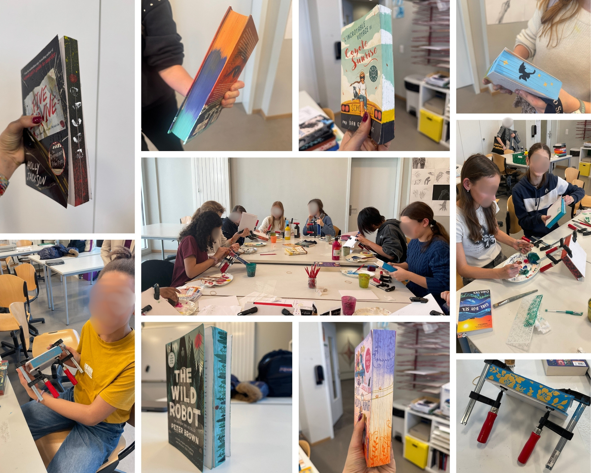

CDI Florimont : documentation, accueil et médiation
Immersion dans un environnement documentaire scolaire suisse, entre accueil des usagers, traitement documentaire, médiation de la lecture et accompagnement des publics.
- Emplacement
- Institut Florimont, Genève
- Date
- Janvier – mai 2026
- Rôle
- Stagiaire bibliothécaire-documentaliste
- Type de projet
- Documentation / bibliothèque scolaire / médiation
- Contenu
- Accueil, prêt, catalogage, indexation, veille documentaire et actions de médiation en contexte scolaire
Traitement documentaire et gestion du fonds
Catalogage, équipement, rangement, gestion matérielle du fonds, participation aux acquisitions fiction, suivi des séries manga et du fonds sériel : le stage permet de mettre en pratique une véritable dimension bibliothéconomique et une réflexion sur la politique documentaire du CDI. Cette dimension de médiation ne passe pas uniquement par des actions ponctuelles, mais aussi par une attention quotidienne à la manière dont les élèves entrent dans le lieu, y circulent et s’approprient les ressources. Le CDI ne doit pas seulement être un espace de consultation ou de passage, mais un lieu dans lequel les ouvrages, les sélections et les dispositifs de valorisation peuvent créer des points d’entrée concrets vers la lecture et la découverte.
Accueil et accompagnement quotidien
Au quotidien, accueil, prêt, orientation et accompagnement des usagers (élèves et enseignant·es). L'observation des usages du lieu nourrit une compréhension fine de la manière dont un CDI devient un espace de rencontre entre ressources et publics. Les dispositifs de coups de cœur participent à cette logique de visibilité et de médiation. Qu’ils viennent des bibliothécaires ou des lecteur·rices, ils permettent de faire émerger certains ouvrages, de proposer des repères dans le fonds et de rendre les lectures plus visibles dans l’espace du CDI. Cette mise en avant contribue à faire du lieu un espace où les ressources ne sont pas seulement rangées, mais activement proposées, recommandées et partagées.
Coin coups de cœur et atelier jaspage
Mise en place du coin coups de cœur des bibliothécaires et création d'un dispositif participatif « coups de cœur lecteurs » (marque-pages et consignes), rédaction de coups de cœur manuscrits sur les ouvrages, participation à un atelier jaspage mêlant lecture et pratique artistique. Le fait d’associer les élèves à cette dynamique, notamment à travers les coups de cœur lecteurs, renforce aussi la dimension participative du CDI. Il ne s’agit pas seulement de leur proposer des ressources, mais de leur donner une place dans la circulation des recommandations et dans la vie du lieu. Cette dimension me paraît importante, car elle contribue à faire du CDI un espace moins descendant, plus vivant et davantage investi par ses usagers.
Transposer la pratique de la librairie
Les coups de cœur manuscrits et les sélections s'inspirent directement de ma pratique en librairie. Cette transposition illustre une continuité forte entre deux lieux du livre : la librairie et la bibliothèque scolaire. L’atelier jaspage s’inscrit lui aussi dans cette volonté de faire du CDI un lieu attractif et investi. Au-delà de son aspect créatif, il constitue une autre manière d’entrer dans le rapport au livre, par la manipulation, l’appropriation et l’expérience concrète. Ce type d’animation permet de diversifier les formes de médiation proposées et d’ouvrir l’accès aux ressources par un biais plus sensible, plus ludique et plus engageant pour les élèves.
Un CDI vivant, entre espaces, dispositifs et médiation




Documents de travail et d’organisation
Retour analytique
Cette expérience me permet de mieux comprendre combien la médiation en CDI ne repose pas uniquement sur des actions exceptionnelles, mais aussi sur un ensemble de gestes, de dispositifs et de choix de mise en valeur qui transforment le rapport des usagers au lieu et aux ressources. Elle renforce chez moi l’idée qu’un CDI peut être à la fois un espace documentaire, un lieu de lecture, un lieu de circulation des recommandations et un espace d’appropriation culturelle pour les élèves.